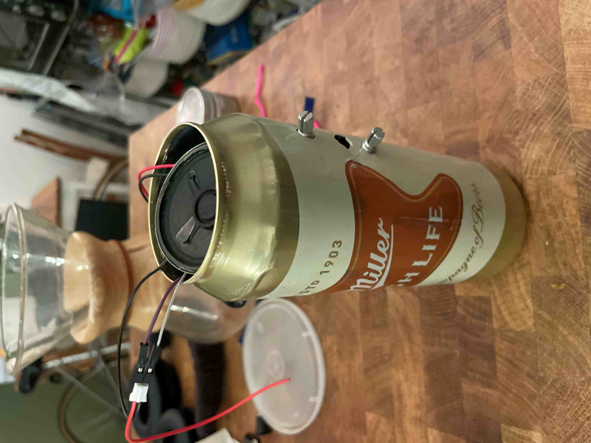
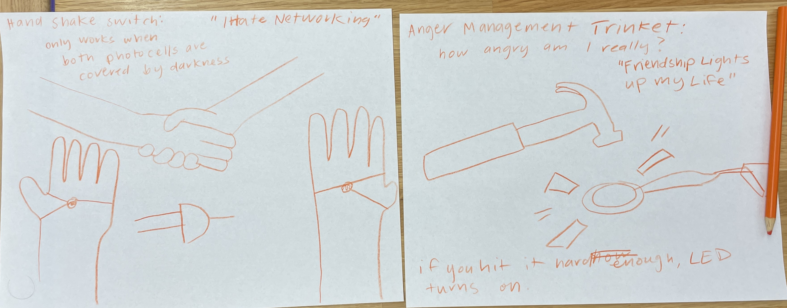

week 1 week 2 week 3 week 4 week 5 week 6
I would describe interactivity as communication with information processing between people or systems.
The word communication is difficult because it doesn’t necessarily mean that things are understood,
processed, or information is used in some way for the response. I really enjoy Crawford’s definition
of interaction precisely because it expresses it in a people forward matter rather than using technically
specific jargon that requires an analogy to understand, it goes straight to using real human experiences
as the basis for the definition.
I think it is important to have different ways of understanding
how things work to bring in opportunities for diverse backgrounds to understand a system or problem.
At IDM, I always find myself halfway between art and technology, of course, and jargon can be such a
limiting way of isolating certain people from having access to a technology or even theory. Many
times, I find myself asking a friend for a “dumbed down” version of what is happening on a website,
and understanding these things usually come with a certain level of familiarity with a topic, but
just sets up another barrier for my access to these things. For example, I am trying to figure out
how to manufacture a PCB, which is something very new to me, and circular definitions provide no
understanding for what is going on and how to move forward, even through the ordering process. In
providing multiple definitions and opportunities for accessible interaction, more people from
different backgrounds are able to understand, and form their own understanding of the purpose of
a system or technology, subverting its expectations.
This is my first time working on a breadboard and it went so well! I'm pretty happy with how quickly I got the hang of it. It's very exciting to work with little circuits as it is such a weird kind of tactile learning in plugging in wires and little things.
After getting it to work with the basics, I replaced the fixed resitor with a photocell for more inputs.
From there, I soldered it onto the bus board. This is my first time soldering anything electrical (I experimented in jewelry) and had some difficulty getting it started. With some practice, I was able to get a nice, flat board by the end of it. Little components keep breaking when I try to put it in a container, so it doesn't work inside yet.
I need to fix the speaker and add some hot glue to make it secure, but otherwise I'm so happy with it!
However, this is the concept. It should be done by Wednesday.
update: concept -> finished.
Dourish defines tangible computing as computing that agrees with and reflects our experiences as people who exist in bodies– we interact with things physically. Social computing is the idea that we relate to the world as social beings, and place social concepts on the computing systems we work with. Both are situated by the concept of embodied interaction, or interaction that notices and plays with the fact that it exists in a real space and does not just live in a singular interface. I think these concepts make sense, they were defined almost 20 years ago and I can find many examples just in Apple (the whole idea of an Apple ecosystem where devices work with each other and talk to each other) that reflect these ideas of interaction.
I’m not sure what other kinds of computing Dourish might be ignoring. Emotional computing? That’s social. Cognitive computing? That’s just computing computing. Queer computing? Social. Non western computing? Maybe, I wouldn’t know what that looks like. Religious computing. Maybe we can find a god somewhere between our hardware and software.
Me and Marshall concepted two strange switches titled, "I Hate Networking" and "Friendship Lights Up My Life."
"Friendship Lights Up My Life" uses piezo sensors attached to gloves on opposite wearers. When the users high-five, the LED lights up properly.
"I Hate Networking" has light sensors also attached to users gloves that detects when the users shake hands. The LED turns off when the sensors are covered.
I was so sick I am still catching up on work, please bear with me.. :,(
Marshall and I went to MICROCENTER!!!! The purpose was to find a sensor for our little research presentation.
We got a couple things, a CCS811 Air Quality Sensor and
a simple touch sensor.
Unfortunately, for the life of us, we could not get the sensors to work. This was our plan for the love machine and demo of presentation.
Our air quality sensor only worked specifically when the cable was jiggled, and the touch sensor worked when it was halfway out of the breadboard.
I didn't get the temperature sensor in class and we had experimented with photocells and piezos in class.
We spent many hours in the IDM design lab taking everything apart and starting from the beginning, but so far it was a dud.
Will try again in the next day.